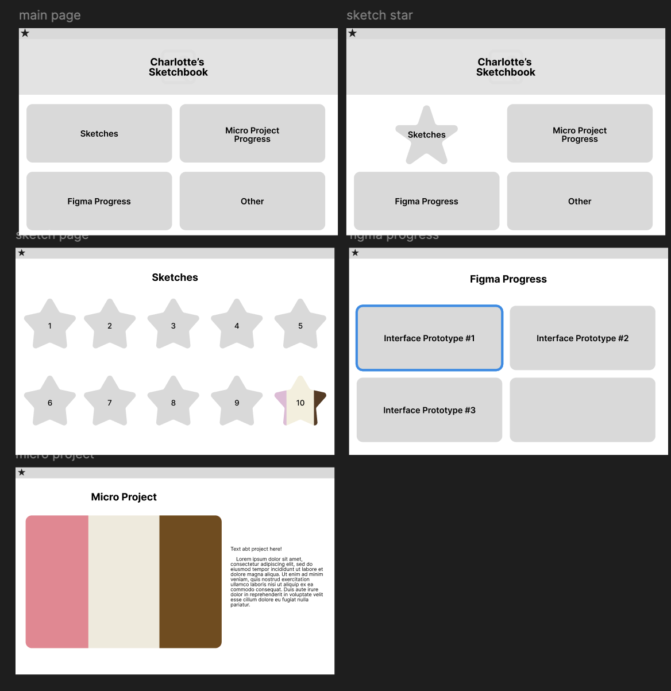
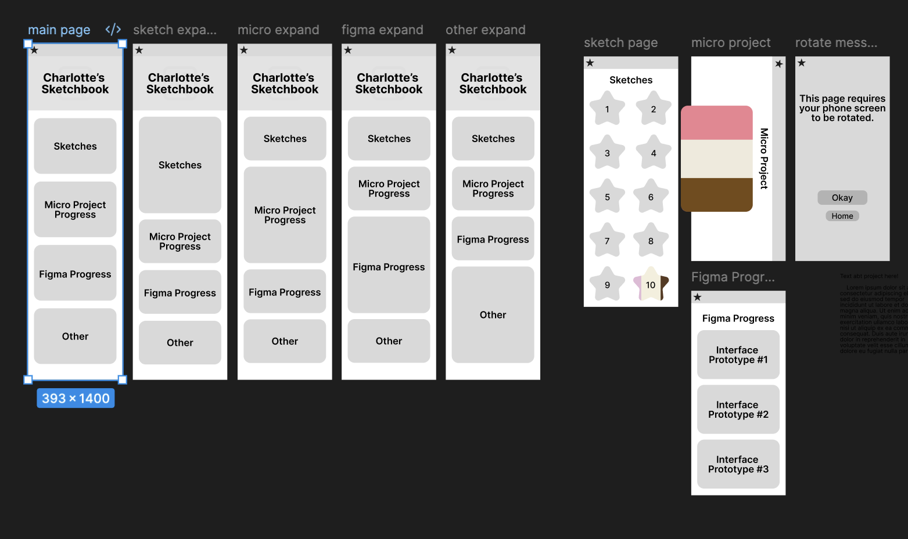

The navigation model I settled on was to make the navigation into "folders" in a way. This way, I can separate the different pages without needing to create a complicated navigation style. It also allows it to be a simple idea that mimics real life. If you need a document, look in the folder where it would be found. This comes from the second heuristic Norman tells us about where the user should be able to easily recognize concepts, as they are based on real world ideas. Similarly, on my page if you're looking for this page, you would look in my Figma progress folder.
Hierarchy was made by using only one h1 tag and using the h2 tag for sub headers. I also used body text when it was necessary. By doing this, the users eye can be drawn the way it is meant to be drawn. First to the title so they know what page they are on, next to any sub headers, and next to the body text. Hierarchy also comes through the pages as you have the overall navigation and it goes through the sub levels. On the folders I also added a mechanic to have the shape expand on hover because it guides the users attention. This way, it makes it so that they can focus on whatever is being interacted with. For the desktop version, the expanding shapes doesn't work as well because the layout isn't made for it as much as the mobile version is. Instead, to keep the same feel, I had the boxes become stars on hover.
By designing the mobile screens first, I could make sure that the pages were compatible with a phone screen before seeing if it works on desktop. Working on the mobile screen meant that there was less space, which meant I had to think differently about how I was designing my site compared to before when I only had to consider the desktop view. Having long navigation wasn't working for either desktop or mobile because it covered the whole screen every time it was brought up. By changing it the way I did, it means that its easily separated and doesn't interfere with the user experience. This relates to Shneiderman's rule on keeping users in control. It would be frustrating or confusing if the piece that is meant to get you around is blocking your screen or isn't able to do what it needs to. Guiding the user easily with folders helps alleviate this confusion.
Creating this in Figma let me plan things and get my ideas out before we eventually move to actually implementing them. As I was making them I tried to think about how these would actually be coded into the site and how the user might navigate through them. I tried to recall the rules we had learned about users being able to properly use and understand what I make, while also considering the visual style (not yet fonts or color, but shape and form) that I wanted to implement.